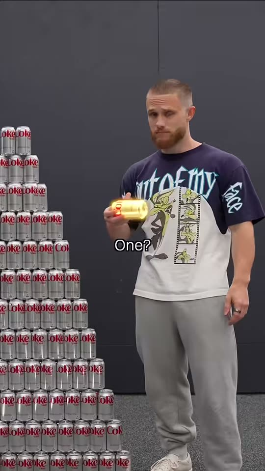
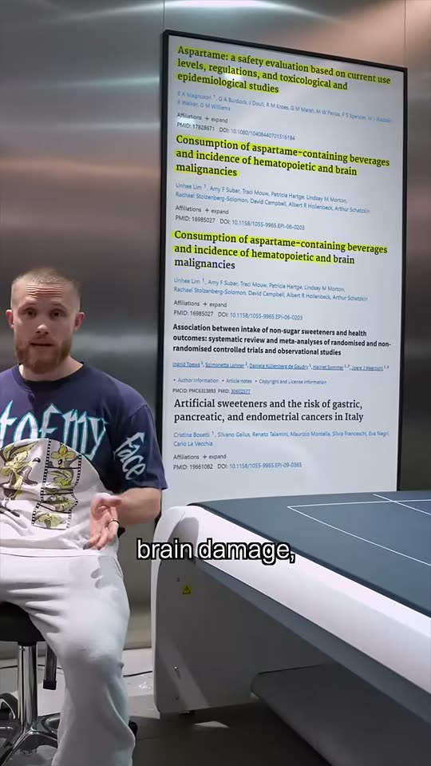
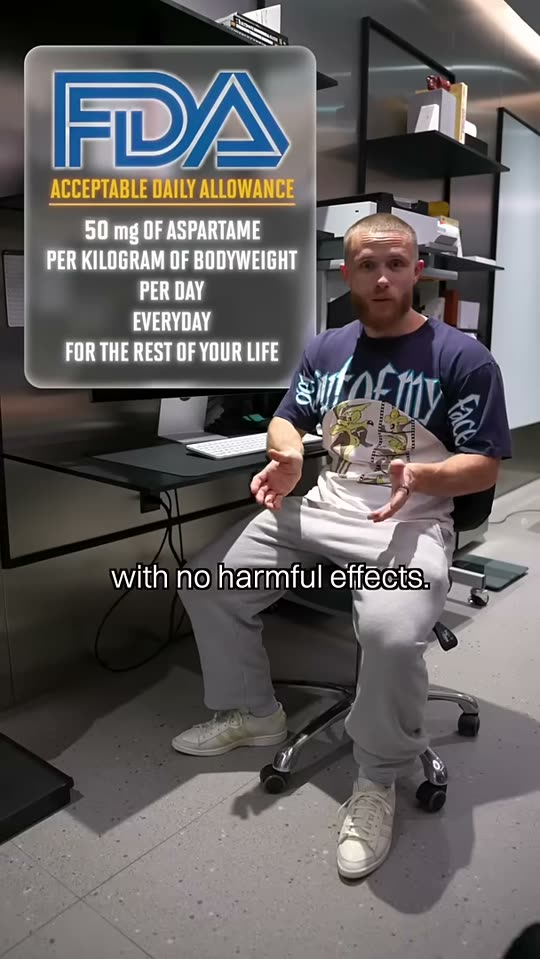
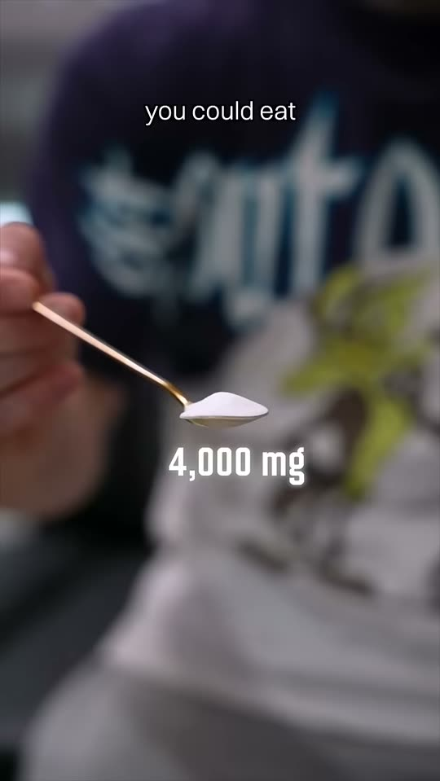
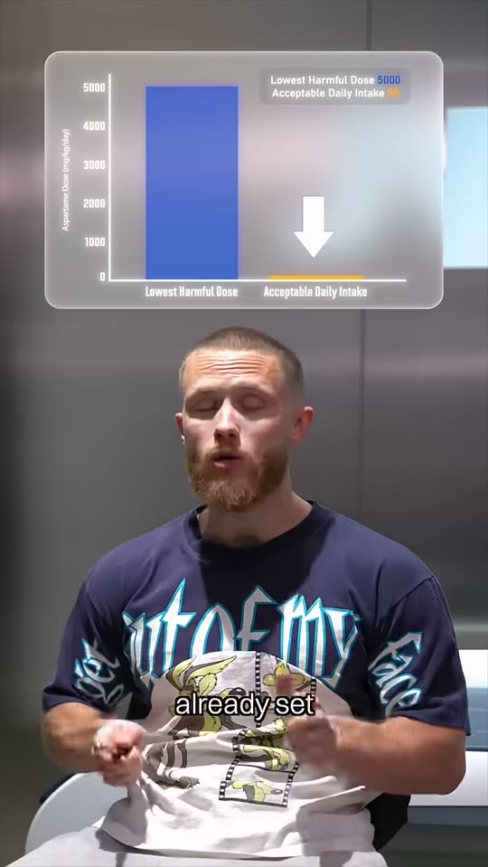
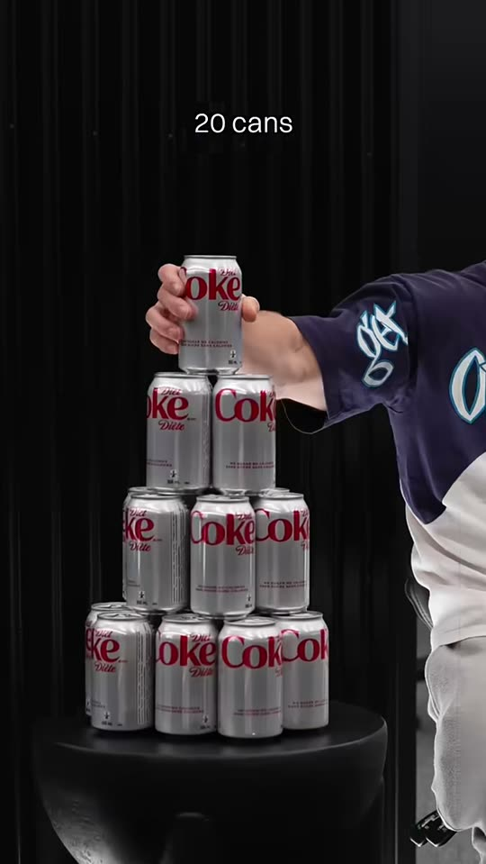
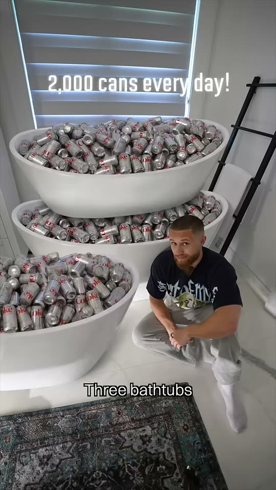
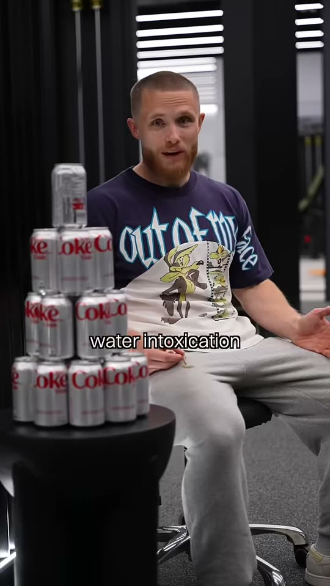

¿Cuántas latas
sin azúcar?
Que sea dulce no significa que tenga azúcar.
| Texto | Lo que se ve | Referencia · Nippard |
|---|---|---|
| 0–5 s · Gancho
¿Cuántas gaseosas sin azúcar puedes tomar al día? ¿Una? ¿Diez? ¿Cien? ¿Y esto cambia si tienes diabetes? |
Escritorio con pirámide de latas lisas de colores, de varios tamaños. Al decir «una» se ilumina una lata; al decir «diez», diez; luego aparece un «?» grande. |
 0:03 |
| 5–12 s · La etiqueta
Leamos la etiqueta: azúcares, cero. Calorías, cero. ¿Y por qué es dulce? Es por el aspartame. Endulza unas doscientas veces más que el azúcar. |
Plano cenital de la tabla nutricional de una lata, con el logo fuera de cuadro. Se resaltan en rojo, una por una: «Azúcares 0 g», «Energía 0 kcal» y «aspartame» en la lista de ingredientes. |
 0:26 |
| 12–22 s · La composición
Está compuesto por dos aminoácidos: ácido aspártico y fenilalanina. No tiene azúcar. Por eso no te sube la glucosa. |
Motion graphic: aparecen por separado «ácido aspártico» y «fenilalanina», y cada una brilla al nombrarla. Luego, un emoji de azúcar tachado con una X, con sonido. Al final, «sin glucosa» en rojo. |
Mockup propio · loop 8 s |
| 22–32 s · La regla
La OMS dice que puedes consumir cuarenta miligramos por kilo de peso al día, de forma segura. Ese es tu límite. |
Tarjeta blanca flotante con borde rojo que se arma frase por frase: «40 mg» → «por kilo de peso» → «por día» → «toda la vida». Abajo, en letra pequeña: «OMS/JECFA, julio 2023». |
 0:16 |
| 32–37 s · En tu cuerpo
Si pesas 70 kilos, esta es la cantidad que podrías consumir diariamente sin ningún tipo de efecto adverso. |
Primer plano de una cucharita con polvo blanco frente a la bata. Rótulo: «2.800 mg». Antes, un segundo de silueta con «70 kg». |
 0:18 |
| 37–45 s · El margen
Y ese límite está cien veces por debajo de la cantidad que se vio segura en estudios con animales. |
Gráfico flotante de dos barras: una alta en gris («sin daño en animales») y una mínima en rojo («límite OMS»). Una flecha baja entre las dos con «100×». |
 0:32 |
| 45–52 s · La lata
Una lata tiene unos doscientos miligramos. O sea, tendrías que tomar catorce latas diarias solo para llegar al límite. |
Una lata en la mano con el chip «200 mg». Luego arma sobre el escritorio una pirámide de 14 latas de colores mientras dice «catorce». |
 0:45 |
| 52–55 s · El absurdo
Y para llegar al techo seguro que se vio en animales, necesitarías unas mil cuatrocientas latas al día. Tres tinas llenas. |
Corte a animación: tres tinas blancas desbordando latas de colores. Rótulo «1.400 latas al día». |
 0:53 |
| 55–65 s · Cierre
Así que si te provoca algo dulce, disfrútala sin culpa. No reemplaza al agua, pero sí a la gaseosa con azúcar. Cuidarte no es dejar todo lo que te gusta, es aprender a elegir lo que te hace bien hoy, para estar mejor mañana. |
Plano medio con la pirámide al lado y una sola lata en la mano. El eslogan aparece en pantalla en blanco sobre el fondo rojo, con el cierre que indique la agencia. |
 0:56 |
~205 palabras base, ~225 con opcionales · ≈ 54–59 s hablados, más el tiempo del motion graphic (≈ 65 s en total)
Las latas
Latas lisas, sin logos ni texto. Colores variados dentro de lo que permite Rímac.
Fuentes
- OMS · Aspartame hazard and risk assessment results (14-jul-2023): IDA de 40 mg/kg; 9 a 14 latas para 70 kg; IARC 2B.
- EFSA 2013 · Re-evaluation of aspartame (E 951): 4.000 mg/kg/día sin daño en animales.
- OPS/OMS 2023 · Guía de edulcorantes: no aplica a personas con diabetes.
- McGlynn et al. 2022, JAMA Netw Open: cambiar bebidas azucaradas por sin azúcar da una mejora pequeña, parecida a cambiarlas por agua.